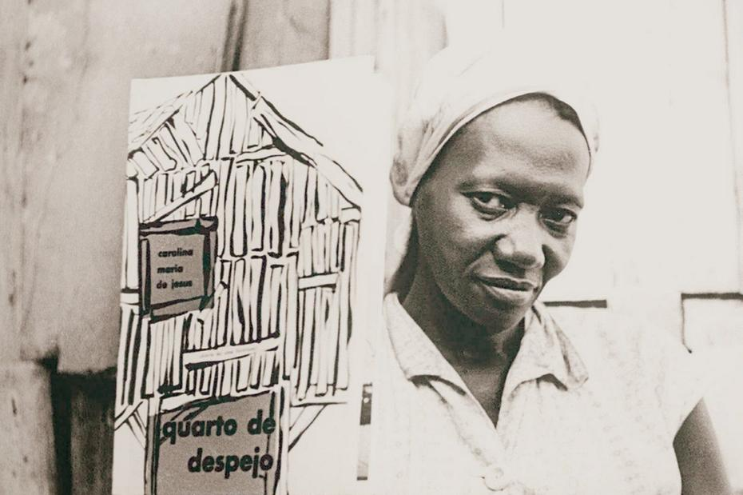

Quarto de Despejo

... 15DE JULHO DE 1955 - Aniversário de minha filha Vera Eunice. Eu pretendia comprar um par de sapatos para ela. Mas o custo dos generos alimentícios nos impede a realização dos nossos desejos. Atualmente somos escravos do custo de vida. Eu achei um par de sapatos no lixo, lavei e remendei para ela calçar.
Eu não tinha um tostão para comprar pão. Então eu lavei 3 litros e troquei com o Arnaldo. Ele ficou com os litros e deu-me pão. Fui receber o dinheiro do papel. Recebi 65 cruzeiros. Comprei 20 de carne, 1 quilo de toucinho e 1 quilo de açúcar e seis cruzeiros de queijo. E o dinheiro acabou-se.
Passei o dia indisposta. Percebi que estava resfriada. A noite o peito doiame. Comecei tussir. Resolvi não sair a noite para catar papel. Procurei meu filho João José. Ele estava na rua Felisberto de Carvalho, perto do mercadinho. O ônibus atirou um garoto na calçada e a turba afluiu-se. Ele estava no núcleo. Deilhe uns tapas e em cinco minutos ele chegou em casa.
Ablui as crianças, aleitei-as e ablui-me e aleitei-me. Esperei até as 11 horas, um certo alguém. Ele não veio. Tomei um melhorai e deitei-me novamente. Quando despertei o astro rei deslisava no espaço. A minha filha Vera Eunice dizia: — Vai buscar agua mamãe!
Carolina Maria de Jesus nasceu em 14 de março de 1914, na cidade de Sacramento, em Minas Gerais, filha de uma família negra e muito pobre. Teve pouca escolaridade, estudando apenas dois anos no Colégio Allan Kardec.
Em 1937, mudou-se para São Paulo, onde viveu por muitos anos na favela do Canindé com seus três filhos. Para sobreviver, trabalhava catando papéis e outros materiais recicláveis. Mesmo com muitas dificuldades, gostava muito de ler e começou a escrever em cadernos que encontrava no lixo, registrando o cotidiano da favela.
Em 1960, foi lançado seu livro mais famoso, Quarto de Despejo: Diário de uma Favelada, que fez grande sucesso, vendeu milhares de exemplares e foi traduzido para vários idiomas, tornando a autora conhecida internacionalmente.